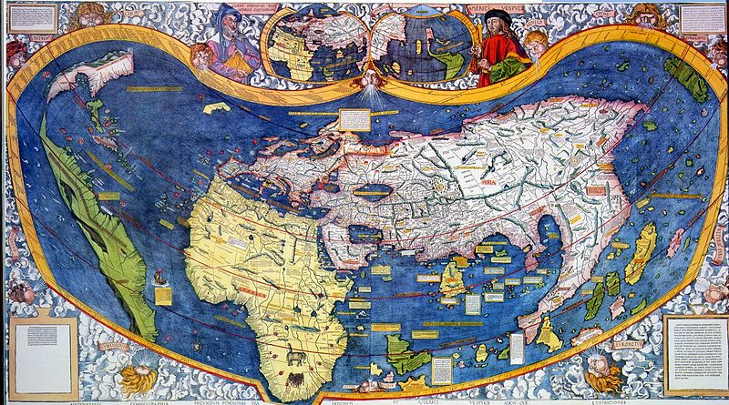
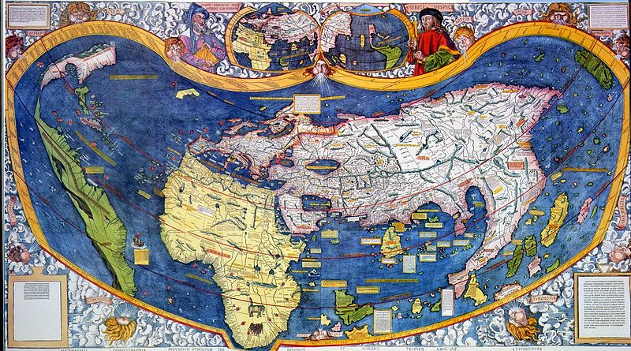

Élete
 Amerigo Vespucci olasz utazó, felfedező és térképész. Firenzében született 1454 március 9.-én. 1499-ben a spanyol Alonso de Ojeda vezette expedíció navigátoraként részt vett Kolumbusz Kristóf második útján és az 1507-ben megjelent Négy utazás című beszámolójában „Újvilágnak” (Mundus Novus) nevezte a felfedezett új földrészt. 1507-től kezdve Vespucci keresztneve után Amerikának kezdték nevezni az új kontinenst. Martin Waldseemüller német térképrajzoló 1507-ben kiadott világtérképén már külön ábrázolta az Újvilágot, annak déli részére pedig az „America” feliratot nyomtatta. A névadást Vespucci latinizált keresztneve ihlette nőnemű alakban, ugyanis a többi, akkor ismert kontinens neve (Europa, Asia, Africa), szintén nőnemű volt. 1512 február 22.-én malálriában halt meg Sevillában.

Amerigo Vespucci olasz utazó, felfedező és térképész. Firenzében született 1454 március 9.-én. 1499-ben a spanyol Alonso de Ojeda vezette expedíció navigátoraként részt vett Kolumbusz Kristóf második útján és az 1507-ben megjelent Négy utazás című beszámolójában „Újvilágnak” (Mundus Novus) nevezte a felfedezett új földrészt. 1507-től kezdve Vespucci keresztneve után Amerikának kezdték nevezni az új kontinenst. Martin Waldseemüller német térképrajzoló 1507-ben kiadott világtérképén már külön ábrázolta az Újvilágot, annak déli részére pedig az „America” feliratot nyomtatta. A névadást Vespucci latinizált keresztneve ihlette nőnemű alakban, ugyanis a többi, akkor ismert kontinens neve (Europa, Asia, Africa), szintén nőnemű volt. 1512 február 22.-én malálriában halt meg Sevillában.

Forrás: Wikipédia